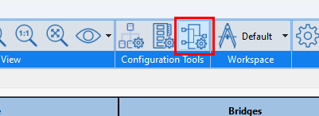

Kactus2 features a generator for generating interconnect components to connect IP blocks in a given design. To launch the generator, press the button
in the configuration tools section, while a design is open:

The interconnect generator can create IP-XACT models for interconnect components using either transparent bridges or channels for addressing. RTL code generation (verilog) is supported for selected abstraction definitions and interconnect types. The RTL code relies on PULP open source libraries for the functional RTL.
VLNV editor is used to define the VLNV for the interconnect component. The generated IP-XACT document will be placed in the default library with a path derived from the VLNV.
The interconnect component requires that an abstraction definition is selected for the bus interfaces that are generated. The abstraction definition should generally match the wanted interconnect type, such as AXI4 or OBI. The listed abstraction definition options are abstraction definitions in use by the bus interfaces of the component instances in the design.
Apart from IP-XACT component description, a verilog RTL file can be automatically generated for supported configurations. RTL file generation is still experimental and requires that interconnect uses a compatible abstraction definition. Currently supported abstraction definitions are TUNI authored AXI4(LITE) and OBI abstractions. RTL generation is recommended for channel-type interconnect components, but bridges are also supported with limited address mapping capabilities. RTL generation also requires that the Verilog generator plugin is enabled. Generated RTL code needs bit width information for address and data widths. This information can be automatically extracted from selected abstraction definition, more information in the Interconnect component parameters section below.
The RTL file is generated to the interconnect component IP-XACT model location and the generated RTL can also be added to a file set by checking the "Add to fileset" checkbox and providing a name for the fileset.
It is possible to define parameters for the interconnect component. Some parameters are automatically created for RTL generation. These are the address and data bit widths. To automatically extract widths, they must be parameterized in the selected abstraction definition. The disabled fields (grey background) in the screenshot above are automatically extracted width parameters. If no width parameters are found, then they are automatically created with default names ADDR_WIDTH and DATA_WIDTH. Whether the parameters were extracted or created, they cannot be removed during interconnect generation and only the value field can be edited.
Address ports in abstraction definition should use the address width parameter as the port width, and have address qualifier set. The same applies to data ports and data widths. As an example, below is a screenshot from TUNI AXI4LITE abstraction definition:
Interconnect modes select which type of component is created: one using transparent bridges as the internal mapping, or one that uses a channel. Address mapping is currently only available for channel-based interconnect components.
The Instances to connect section consists of a list where component instances found in the design can be selected to be connected to the interconnect component. Instance interfaces to connect can be selected with the round checkboxes.
For both bridge mode and channel mode, at least one initiator/master-adjacent and one target/slave-adjacent interface must be selected. Here, initiator-adjacent refers to an interface, which can be connected to a mirrored initiator/master interface of the interconnect component if channel mode is selected, or a target/slave interface if bridge mode is selected. Target-adjacent refers to an interface that can be connected to a mirrored target/slave interface if channel mode is selected, or an initiator/master interface if bridge mode is selected.
If channel mode is selected, it is possible to address-map the selected interfaces using the Start and Range editors. These editors accept IP-XACT expressions and parameters defined in the parameter editor (see above).